Exploration des identités numériques et de l’impact des cookies.
Tu prendrais bien un cookie ?
Exploration des identités numériques et de l’impact des cookies.
Je souhaite adresser mes sincères remerciements à tous celles et ceux qui ont participé à la
réalisation de ce mémoire. Tout d’abord, je tiens à exprimer ma profonde reconnaissance à Damien Bais,
qui m’a apporté une aide précieuse et un soutien indéfectible durant toute la durée de ce projet. Mes
remerciements vont également à l'équipe du RandomLAB.
Je tiens par ailleurs à adresser mes remerciements aux individus que j’ai eu l’occasion de rencontrer
lors de mon stage, ainsi qu’à la personne qui s’est prêtée à une entrevue. Enfin, je souhaite exprimer
ma gratitude envers mes proches, qui m’ont constamment encouragé et soutenu dans cette démarche.
Mémoire rédigé sous la supervision de Damien Bais
Présenté et soutenu par Maxence Mardargent
Année : 2024 / 2025
"Avec la mise en réseau de tous nos ordinateurs, nos vies seraient numérisées,
réduites à une somme de données qu'il suffirait de collecter, d'additionner.
Chaque mot, chaque geste, chaque transaction.
Internet perdait peu à peu son statut de fenêtre sur le monde pour devenir un outil de contrôle,
une nouvelle économie naissait, nous en serions la matière première. Le Nouveau Monde bousculait tout,
nos échanges, nos droits, notre vie privée. Préserver sa vie privée à l'ère de l'exposition de soi,
c'est un acte révolutionnaire, peu importe que vous ayez, une affaire privée c'est ce que le monde ne
veut pas que le monde entier sache.
Un secret, c'est ce qu'on ne veut pas que quiconque sache. La vie privée, c'est la liberté de choisir ce
qu'on dévoile au monde, la liberté."
Ce mémoire fait état de convictions personnelles jugées importantes au regard du rôle croissant
que joue le numérique dans notre quotidien, touchant une amplitude démographique plus importante
avec ses points forts et ses faiblesses. L’importance de concepts tels que la vie privée et la
dépossession,
corroborées à notre personne exige notre attention et nous incite à l’action.
Dans un monde où la présence numérique devient indispensable, chaque utilisateur se voit attribuer,
de manière choisie ou subie, une ou plusieurs identités numériques. Ces identités se déclinent en divers
types et sont régulées par des contraintes sociétales, marchandes et technologiques. Nous allons entamer
un voyage pour mieux comprendre les conséquences de nos choix et actions avec ou contre notre gré.
Pour bien comprendre ce qu'est l'identité numérique et son importance dans notre société actuelle,
commençons
par définir l'identité, dont la symbolique correspond à un caractère permanent et fondamental de
quelqu'un,
d'un groupe,
qui fait son individualité, sa singularité. [3]
Le numérique, qui ici correspond au web, représente quant à lui un ensemble d'appareils connectés en
réseau. Apparu en 1993 avec le World Wide Web. Nous y observons pour la première fois de nouvelles
manières de communiquer, de se soustraire aux lois, mais aussi aux corps et à une société.
C'est à ce stade que l'identité numérique se présente à nous comme un clone, un doppelgänger (défini
comme un double imaginaire de soi-même), de notre identité d'État. Elle correspond aux liens immatériels
entre une entité réelle et virtuelle. L'entité représente à la fois l'ensemble, la masse d'individus et
de données, mais aussi la singularité, symbolisée par chaque personne.
L'apparition de ce double se fait à l'aide des cookies, représentés pour le plus grand nombre en Europe
par une fenêtre de consentement ou de refus. Cette trace numérique est décrite par "un petit fichier
stocké par un serveur dans le terminal (ordinateur, téléphone, etc.) d’un utilisateur et associé à un
domaine Web (c’est-à-dire dans la majorité des cas à l’ensemble des pages d’un même site web). Ce
fichier est automatiquement renvoyé lors de contacts ultérieurs avec le même domaine." [4]
Les cookies représentent un paradoxe en Europe avec le RGPD (règlement général de protection des données) [5], ils sont
essentiels pour
sauvegarder nos
préférences. Pourtant, sans eux, aucune trace de nos choix n’est conservée ni enregistrée. Nous
reviendrons sur ce point plus tard. En outre, notre emplacement régit leur utilisation, les lois
l’imposant aux entreprises, notamment dans le cadre du RGPD, qui exige une certaine
transparence.
Si nous définissons et captons tous les enjeux autour de l'identité numérique, à cette frontière
où
l'humain ne devient que donné, il ne reste plus, aux yeux de certains, de place à
l'individualité et à
la vie privée. L’être humain devient alors un simple produit de consommation, sans âme ni
conscience,
répondant à des critères définis par des entreprises et des logiques capitalistes.
Notre nom, notre prénom sont une porte d'entrée vers ce sosie numérique. Dès lors, une sélection
se met
en place : le nom Martin est le plus commun en France, tandis que le mien se situe en bas de
cette
liste. Un bruit s’opère autour de l’information existante, laissant un champ ouvert sur la
manière dont
nous nous prémunissons, mais aussi dont nous en prenons conscience.
Nous allons examiner les diverses manifestations de l’identité numérique, leur genèse à partir
de nos
informations personnelles et de nos décisions concernant les témoins, ainsi que leurs
conséquences et
répercussions sur les utilisateurs, tout en abordant la sensibilisation croissante à ce propos.
Problématiques :
Comment les cookies participent-ils à la dépossession de soi au profit de notre identité
numérique ? Et comment la circulation mène-t-elle à la création d'un double de soi
numérique ?
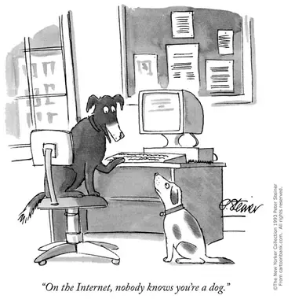
Sur Internet, personne ne sait que vous êtes un chien[6],
05/07/1993, Peter Steiner.
Nos identités plurielles et volontaires : la construction de soi en ligne
Précipitation.
Musique dans les oreilles, le rythme délicat contrastait avec les lumières du métro clignotantes,
déchirant l’obscurité des tunnels et les crissements du véhicule sur les rails. Louis, les yeux
mi-clos, s’abandonnait à une torpeur matinale. Fatigué de son week-end festif, la routine du matin
s’étirait sans éclat. Son agenda n’était pas chargé aujourd’hui. Il était tôt, et autour de lui,
chacun semblait figé, les regards rivés sur leur téléphone.
Dans la rue, le vent soufflait. À peine avait-il franchi la porte de l’open space qu’un mouvement
brusque le tira de sa torpeur. Sophie, une collègue et amie, se tenait là, immobile comme une
statue. Elle tendait un papier plié, sans un mot.
– Qu’est-ce que… ?
Elle détourna les yeux sans répondre et s’éloigna d’un pas rapide. Louis resta planté là, stupéfait,
avant d’ouvrir la note. Une phrase unique, écrite à la hâte :
« Bureau du directeur. Maintenant. »
Ne prenant pas le temps de poser sa veste, il se dirigea vers le bureau. Le trajet lui sembla
anormalement long, déformé par une angoisse rampante qu’il ne parvenait pas à nommer. Lorsqu’il
ferma la porte derrière lui, l'atmosphère était pesante.
– Louis, nous devons mettre fin à notre collaboration, lâcha le directeur d’un ton tranchant.
– Mettre fin ? Mais… pourquoi ?
– La décision est prise. Votre attitude… Un manquement professionnel. Je n’en dirai pas plus.
Le silence s’installa, lourd comme du plomb. Décontenancé, Louis n’osa rien répondre. Le regard du
directeur, impénétrable, semblait l’évaluer. Puis, d’un geste bref, il désigna la porte.
En sortant, Louis sentit son cœur battre dans ses tempes. Il tenta de recoller les morceaux, de
comprendre ce qu’il avait bien pu faire pour mériter un licenciement aussi abrupt. Mais aucune
réponse ne lui vint.
Dans le métro, il s’installa dans un coin, le regard perdu. Son téléphone devint son refuge. Comme
un réflexe, il fit défiler ses réseaux sociaux, espérant se distraire. Mais, au milieu des photos
anodines, un souvenir l’assaillit : Sophie. Ce regard froid, presque craintif. Une image imprécise,
comme un rêve oublié, s’imposa à lui : des mots griffonnés sur un écran, une colère sourde qu’il ne
s’expliquait pas. Il chassa cette idée d’un geste agacé.
1.1. L'identité plurielle
En ligne, l'une des premières choses qui nous est demandée lorsque nous voulons communiquer quelque part
est de nous créer un compte. Pour ce faire, nous jugeons de l'importance ou non de délivrer des
informations de soi au reste de la communauté. Cela nous permet de refléter une partie de soi ou à
l'opposé, d'en explorer d'autres.
"Depuis les années 1990, Internet est devenu un cadre de présentation de soi, de mise en scène de
l’identité personnelle, sociale et civile des individus."
Cette mise en scène est fortement influencée par les sites ou applications utilisées. Nous pouvons les
qualifier d'"user-friendly", nous incitant à publier du contenu, que ce soit des messages visibles par
tous sur Twitter, ou des photos sur Instagram. [8] Les interfaces
numériques participent à l'altérité de soi et font émerger l’héxis numérique :
"L’héxis numérique peut se définir en 3 dimensions :
- L’identité déclarative, renseignée directement par l'utilisateur.
- L’identité agissante, renseignée indirectement.
- L’identité calculée, produite par un traitement des données de l’identité agissante par le système."
Selon Fanny Georges, l'identité déclarative possède des usages et des utilités, tant positives
que négatives. Le web s'impose face aux discriminations, permettant, par exemple, à
l'utilisateur d'un blogue de se définir uniquement par les messages qu'il laisse. Au-delà des
stéréotypes liés à l’apparence, il est possible de dévoiler une facette de soi, comme un pas
vers une nouvelle identité de genre. Bien loin des corps genrés, le web offre des moyens de se
définir avec un pseudo, une photo et une communauté.
Martine Neddam est une artiste qui, depuis 1996, explore à l'aide d'Internet, la question de
l'identité en ligne. À travers plusieurs projets, elle crée des sites Internet qui proposent des
identités distinctes et surtout anonymes. Parmi les sites créés, nous en retiendrons deux,
Mouchette et David Still.
Mouchette.org[10]
est le journal fictif en
ligne (blogue) d'une jeune artiste de 13 ans, axée sur des sujets tels que le suicide, la mort,
la violence ou encore qui fait des allusions sexuelles. Ce projet voit le jour en 1996,
l'artiste ne révélera son identité derrière ce profil que 14 ans plus tard.
Sur la page d’accueil, nous nous trouvons face à une interface kitsch, remplie de couleurs et
d'hyperliens, définit par un élément de contenu qui nous renvoi vers une autre page. Grâce à ça,
Martine Neddam perd les dizaines d'explorateurs qui, curieux de découvrir mouchette, se
retrouvent dans un labyrinthe de pages et de données. Dévoilant à chacun une face différente de
cette personne et de ses pensées.
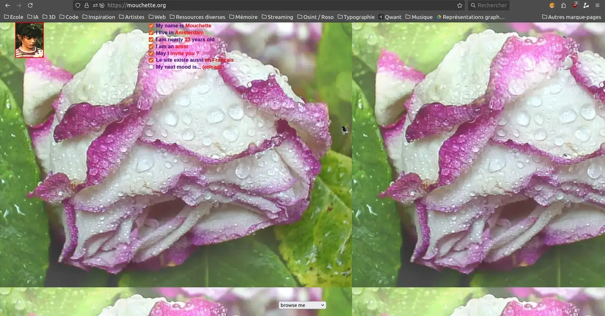
Page d'accueil.
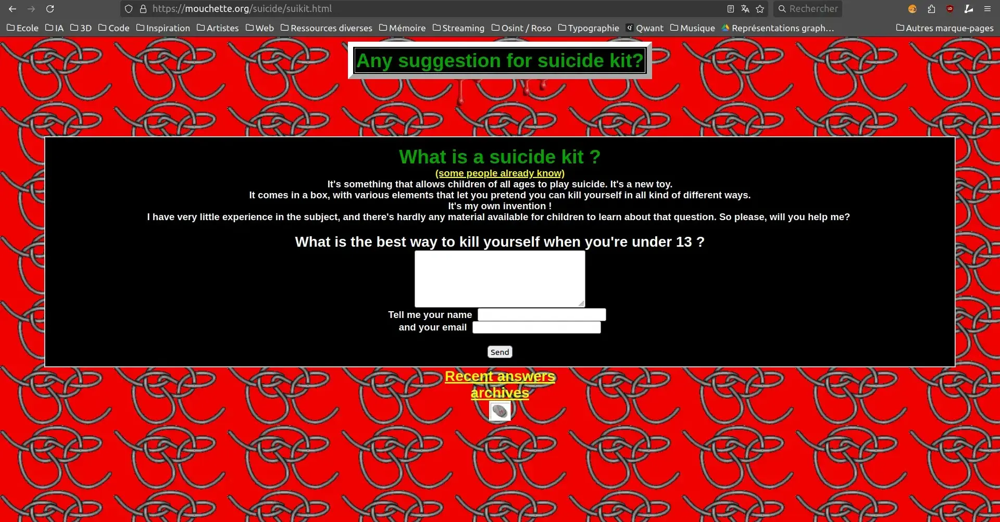
Qu'est-ce qu'un kit de suicide ?Page d'accueil des produits dérivés.
DavidStill.org[11]
a été fondé en 2001 et fonctionne
selon un principe bien différent. Tout le monde peut devenir David Still, un avatar numérique qui est
disponible pour tous les internautes via l’adresse courriel suivante : ds@davidstill.org
Le site se distingue par une interface plus simple, bien loin du chaos de Mouchette. Sur la page
d’accueil, un simple formulaire permet d’envoyer des courriels sous l’identité de David. Cependant, des
liens situés dans le coin supérieur droit du site fournissent suffisamment d’informations pour qu’un
individu quelconque puisse se faire passer pour lui. Personne n'est vraiment David Still, mais, plus
précisément, tout le monde le possède.
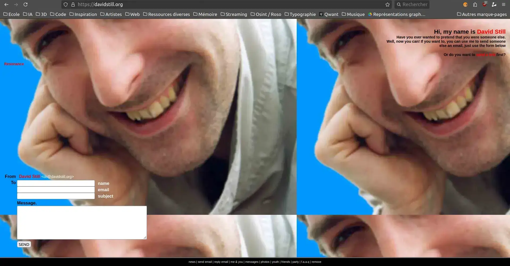
Page d'accueil.
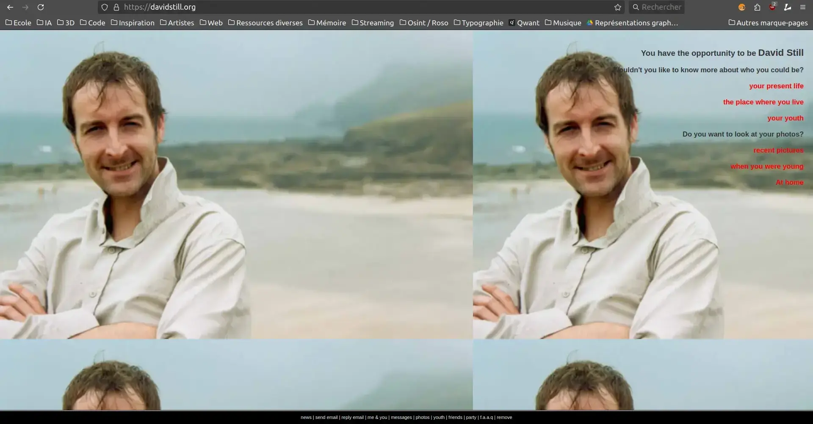
Séléction des informations que nous souhaitons connaître.
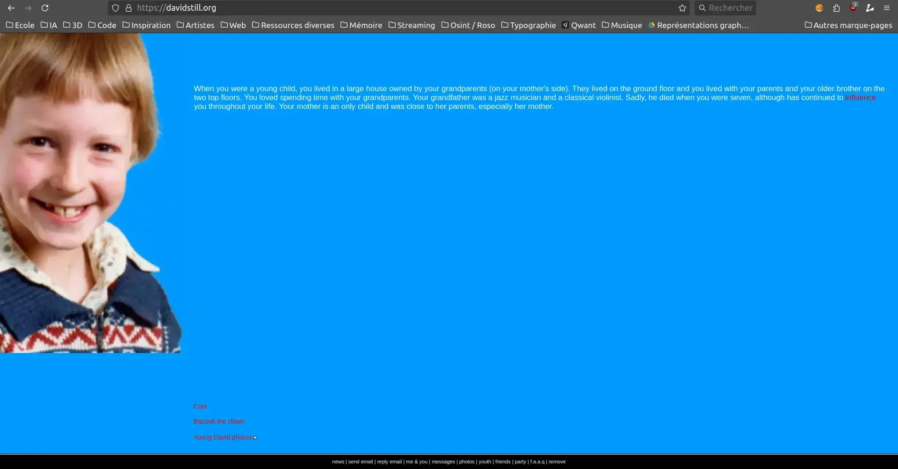
L'enfance de David Still.
Yanis Ayari, surnommé Defend
Intelligence[12], ingénieur en intelligence artificielle, a
réalisé une vidéo tutoriel intitulée
Comment disparaître
d'Internet
?[13]. Il affirme que, lorsqu’il est impossible de
supprimer nos traces numériques, le
moyen le plus simple est d’en créer une multitude.
Au lieu de lier une seule identité à une personne, il en crée plusieurs, chacune avec des
caractéristiques uniques. En créant et en modifiant plusieurs profils avec des informations
sociodémographiques différentes, mais en conservant le même nom et prénom, il génère ce qu’il appelle du
"bruit numérique". Cette méthode est à la fois efficace et économique en termes de temps. Tout cela
repose sur les réseaux sociaux comme point de départ.
1.2. S'incrémenter sur le web
Plateforme
Tranche d'âge dominante
Catégorie sociale
Similitudes/Liens
Facebook
25-45 ans
Tout public, famille, entreprises
Réseau social généraliste, partage multimédia et messagerie privée (comme Instagram).
Instagram
18-34 ans
Jeunes adultes, influenceurs, créatifs
Focalisé sur les visuels (comme Pinterest), avec stories et messagerie privée.
WhatsApp
Tout âge
Tout public
Messagerie instantanée (similaire à Telegram et WeChat).
X (Twitter)
18-45 ans
Professionnels, journalistes, activistes
Discussions publiques ouvertes (comme Reddit).
TikTok
13-24 ans
Jeunes, créatifs
Contenus vidéos courts et divertissants (comme YouTube mais en format court).
Discord
13-30 ans
Gamers, communautés en ligne
Messagerie et appels pour communautés spécifiques (similaire à jeuxvideo.com).
Partage instantané de photos et vidéos (comme BeReal, Instagram).
YouTube
Tout âge
Créateurs, éducateurs, divertissement
Vidéos longues, contenus variés (similaire à TikTok).
Telegram
18-45 ans
Tout public, communautés
Messagerie sécurisée, groupes et chaînes (comme WhatsApp, WeChat).
BeReal
13-25 ans
Jeunes, étudiants
Partage authentique de photos, approche minimaliste (similaire à Natascha).
WeChat
Tout âge
Asiatiques, utilisateurs multifonctionnels
Plateforme tout-en-un (comme WhatsApp mais avec paiements, commandes, etc.).
Google
Tout âge
Tout public
Recherche et services web (différent des réseaux sociaux).
Pinterest
18-45 ans
Créatifs
Plateforme visuelle (comme Instagram mais axée sur l'inspiration).
Tableau comparatif des plateformes numériques.
Ce tableau illustre les principales plateformes numériques actuelles. Il montre une segmentation marquée
par les tranches d'âge et les centres d'intérêt. Nous observons une montée des contenus visuels,
avec une prédominance des vidéos sur les images fixes.
Qu’il s’agisse de réseaux sociaux, de forums anonymes, de messageries instantanées ou de plateformes
multimédias, ces espaces sont devenus bien plus que de simples outils de communication. Ils sont aussi
des lieux d'exposition publique et personnelle.
Bien que les objectifs initiaux soient distincts (par exemple, l’approche professionnelle de LinkedIn
par
rapport à l’attitude détachée d’un blogue), elles tendent toutes deux vers des interfaces similaires.
Cela se traduit par l’ajout de fonctionnalités empruntées, comme les stories sur WhatsApp, inspirées
d’Instagram et Snapchat. Cette uniformité soulève des questions quant à sa pertinence, en particulier
lorsqu’un usage plus limité est favorisé.
"Bien que Facebook ait tenté d'imposer l'usage d'une identité conforme à l'état
civil, il se développe une pléthore de plateformes permettant aux collégiens de s'échapper de
cette surveillance"
L'Internet des enfants[14], David-Julien Rahmil, 2024,
page
168.
Pourtant, si nous prenons l’exemple de collégiens pour qui la recherche d’autonomie et d’identité se
fait
à travers les applications, ils trouvent des moyens de se soustraire au regard de tous.
"Le nombre d'enfants dans la plus jeune catégorie (9-11 ans) qui vont en ligne depuis leur
smartphone chaque jour est compris entre 14% en France et 56% en Lituanie. Cependant, dans la
plupart des pays, moins d'un enfant sur trois de 9 à 11 ans a accès à Internet depuis un
smartphone plusieurs fois par jour"
La tendance actuelle fait que les jeunes se retrouvent très vite sur les réseaux sociaux. Dès 9 ans, un
peu moins d'un enfant sur trois a accès à de multiples reprises à Internet à l'aide d'un
smartphone chaque jour. Le seul pays ayant fait une loi stricte à ce sujet est l'Australie
avec la mise en place d'une vérification de l'âge. Interdit aux moins de 16 ans, le parlement à
inciter les plateformes à s'assurer du respect de la loi.
Le web regorge de dangers, et le projet Doppelgänger[16], mis en
lumière dans un rapport de HarfangLab, en est un exemple concret. Lancée en 2014, cette opération de
désinformation d’origine russe consiste à créer des faux numériques. Ce procédé rappelle, d’une certaine
manière, le projet David Still de Martine Neddam. L’idée est de fabriquer de toutes pièces des identités
fictives, mais ici avec un objectif bien plus sombre : influencer l’opinion publique.
L’entité malveillante connue sous le nom de Doppelgänger a réussi à dupliquer des médias de divers pays,
ce qui a permis la diffusion de fausses informations alignées sur la propagande russe. Ces contenus
étaient ensuite massivement relayés par des bots, des programmes automatisés imitant des comportements
humains sur les réseaux sociaux. Par conséquent, ces fausses informations, élaborées pour sembler
véridiques, ont induit en erreur les internautes les moins expérimentés.
Ce type de manipulation est loin d’être un cas isolé. David Chavalarias, dans son ouvrage Toxic
Data[17] décrit l’ampleur du phénomène. Il débute son livre
par
la guerre des mèmes, revenant sur
les dernières élections présidentielles françaises. À cette occasion, des activistes d’extrême droite,
rassemblés sur le forum 4chan, ont inondé la scène française avec un flot de fausses informations, de
faux profils et d’images trompeuses dans l’espoir de manipuler les discussions politiques nationales et
de diffuser leurs convictions.
Face à ces stratégies invisibles pour la plupart des utilisateurs, il est facile de manipuler l’opinion,
soit en modifiant sa perception, soit en renforçant ses convictions.
1.3. Le web 2.0
Du World Wide Web[18] au Web 2.0,
l’histoire du web a connu une révolution dans la construction des interactions sociales. Initialement
développé en 1989 au CERN (conseil européen pour la recherche nucléaire) pour les chercheurs et universitaires, Internet a vu émerger le concept de Web
2.0 en 2003. Cette évolution se caractérise par l’apparition des réseaux sociaux, la production
participative et une accessibilité accrue pour les non-initiés à l'informatique.
"La principale inflexion qu'il imprime au web est d'articuler étroitement
l'exposition de soi et la conversation entre proches qui s'étaient jusqu'alors déployées
dans des espaces distincts."
La démocratie Internet, promesses et limites[19],
Dominique
Cardon, 2010, page 55.
Cette tendance est renforcée par l’attrait croissant pour l’image, alimenté par l’arrivée des téléphones
dotés d’appareils photo dès 1999. Nokia, avec son premier modèle doté d’un capteur
photographique, ne se doutait pas que cette innovation transformerait les interactions humaines.
"Les premières formes d'exposition de soi sur le web étaient comme des bouteilles à la
mer."
La démocratie Internet, promesses et limites[20],
Dominique Cardon, 2010, page 57.
Ainsi, le Web 2.0 a profondément transformé les outils de communication et a façonné une nouvelle
dynamique identitaire où l’exposition de soi est au cœur de l’expérience numérique.
Animée par l’aspiration à se mettre en évidence, la technologie a connu des progrès remarquables, tant
sur le plan technique que dans l’orientation des objets du quotidien. Les téléphones, par exemple, sont
devenus de plus en plus intuitifs, simplifiant leur interface au fil des années. L’apparition de la
caméra frontale, vers 2008, a marqué un tournant avec la démocratisation du selfie, alors que la
navigation sur Internet s’est considérablement enrichie.
Sur le Web, il existe deux types de communication : l’une favorise les échanges entre individus, et
l’autre, la diffusion d’informations à grande échelle.
"La première, à travers le courrier postal, le téléphone ou le mail, permet à chacun de
s'adresser à un ou plusieurs interlocuteurs désignés. La seconde, avec la presse, la radio ou la
télévision, destine les messages de quelques-uns à un public vaste et indifférencié... En réunissant
sur la même interface les outils de l'échange interpersonnel et ceux de la communication de
masse, Internet instaure un nouveau type de relation entre la sphère de la conversation et celle de
l'information."
La démocratie Internet, promesses et limites[22],
Dominique
Cardon, 2010, page 09.
Le 8 décembre 2005, l'artiste Cory Arcangel a performé un "Friendster Suicide". Il s’agit
d’un suicide numérique sur le site Friendster. Ce dernier fait partie des premiers sites de réseautage
social. Bien que de plus en plus courant de nos jours, cette pratique de disparaître d'Internet si tôt
est presque précurseur. L'artiste a marqué un pan de ce nouveau web au travers de cette phrase postée
sur son compte quelques jours avant de supprimer définitivement son compte.
"Cher Internet, je t'écris pour t'annoncer que je vais me suicider sur Friendster jeudi, --->
c'est-à-dire supprimer mon compte Friendster. Yep, je n'en peux plus..."
D'autres pratiques quant à elles, ont connu une expansion significative. Le projet YellowArrow[24],
lancé en 2004 par Christopher Allen, Brian House et Jesse Shapins, a duré deux ans. Durant cette
période, ces flèches se sont retrouvées dans 38 pays différents.
Le projet fut le précurseur d’un web géospatial, le projet préfigurait Google Maps, Flickr, MySpace,
Facebook et des applications de géolocalisation sur les smartphones. Il a suggéré que les logiciels
sociaux, en association avec les appareils mobiles et la photographie, pouvaient radicalement
transformer notre perception du lieu.
L'initiative du projet est que les participants plaçaient des autocollants en forme de flèche jaune
avec un code unique pour attirer l'attention sur des lieux et des objets. Les passants pouvaient
envoyer un SMS au numéro qui figurait sur l'autocollant avec le code sur la flèche. Puis nous
recevions un SMS en retour avec un texte écrit par quelqu'un d'autre. Ce projet a mis en
évidence une connexion entre des inconnus, au moyen du téléphone, sans qu’il soit nécessaire de se
rencontrer.
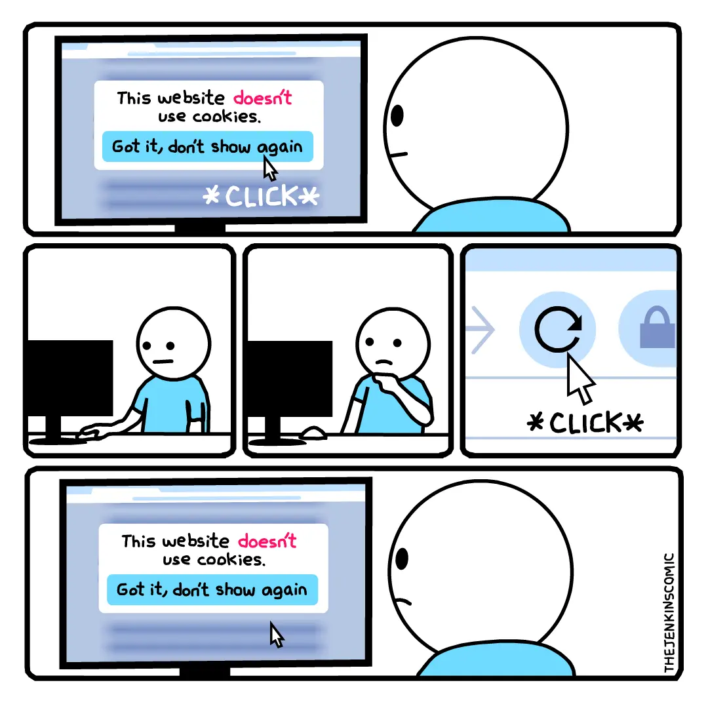
Sans cookies, aucune information n'est enregistrée ou sauvegardée, notamment nos
préférences [25].
Nos identités plurielles et volontaires : la construction de soi en ligne
Fascination.
Chez lui, l’esprit encore embrumé, il alluma son ordinateur, mû par une impulsion qu’il ne
comprenait pas lui-même. En ouvrant son navigateur, l’un des onglets déjà présents de sa dernière
visite était le réseau interne de son entreprise. Peut-être y trouverait-il une explication. Il
parcourut les échanges récents, jusqu’à tomber sur une capture d’écran partagée avec l’ensemble de
l’équipe. Sa respiration se bloqua.
Le message, publié depuis son propre compte sur un réseau social, était une attaque cruelle contre
Sophie. Mais il n’avait aucun souvenir d’avoir écrit ces mots. Ses doigts tremblaient alors qu’il
regardait l’horodatage : samedi soir. L’alcool bu ce soir-là brouillait ses souvenirs, mais… non,
cela ne lui ressemblait pas. Rien de tout cela n’avait de sens.
Les jours suivants furent marqués par une inertie oppressante. Il tenta de contacter Sophie, mais
elle était introuvable sur les réseaux, sûrement l'avait-elle bloquée, et l'adresse courriel
professionnelle de Louis avait été supprimée. Il se noyait dans un mélange de colère et
d’incompréhension. Le message, les discussions dans son dos, son licenciement… Tout cela formait une
toile d’événements qu’il n’arrivait pas à démêler. Mais quelque chose clochait, il en était
certain.
Il passa des heures sur son téléphone, obsédé par des détails qu’il n’aurait jamais remarqués
autrement. Les publicités. Les recommandations. Elles étaient si précises, si adaptées qu’elles
semblaient lire dans ses pensées. Une publicité pour un livre qu’il avait seulement évoqué en
passant, une offre pour un restaurant près de chez lui qu’il n’avait jamais mentionné… La sensation
d’être observé, manipulé, grandissait en lui comme une herbe folle.
Louis commença à chercher des réponses. Ses recherches le menèrent à des forums et des articles
techniques qu’il peinait à comprendre. Un soir, il tomba sur un lien menant à un navigateur
alternatif. On disait qu’il permettait d’échapper aux algorithmes. Il remarqua que les résultats
étaient significativement différents, mais les publicités semblaient encore plus précises. C’est là
qu’il découvrit un article dénonçant la collecte massive de données personnelles et la manière dont
elles étaient utilisées pour construire des « profils comportementaux ».
– Ce n’est pas possible, murmura-t-il en lisant.
2.1. L'identité numérique civile
L'identité civile numérique désigne les liens entre :
"Un cadre législatif qui régit l'enregistrement des naissances, mariages, décès, de même que
les autres faits relatifs à l'état des personnes (divorces, reconnaissances, légitimations,
adoptions). C'est sur cette base que s'est élaboré le recueil de données pour
l'établissement des statistiques de l'état civil" [26]. Cette définition
rend compte
des informations qui pourraient être stockées avec le Digital
ID Wallet[27], un projet du groupe Thales d'identité mobile qui
rappelle l'application phare
de la pandémie, TousAntiCovid. Que pouvons-nous espérer de la part d'une entreprise privée qui
stocke et gère nos données les plus sensibles ?
Nous retrouvons également cette part de nous sur des plateformes sociales, telles que Facebook ou
LinkedIn, qui nous incitent à mettre notre nom et prénom civil avec un degré d'informations
personnelles ou professionnelles différent en fonction de l'entourage et de l'usage que nous en
faisons.
Mais avant même la création de notre premier compte sur le web, nous retrouvons des traces "ante
natam" :
"Des identités numériques ante natam, créées par des parents avant même la naissance de leur
enfant."
Elles représentent des dossiers médicaux contenant des échographies, des données sur le poids ou encore
la taille, sur des serveurs malheureusement peu sécurisés et soumis à des cyberattaques[29]
récurrentes. Mais avant d'être préoccupé par des fuites potentielles, il existe depuis plusieurs
années une tendance sur les réseaux sociaux : le gender reveal. C'est une pratique consistant à
dévoiler le genre de son ou ses futur(s) enfant(s) au travers d'une fête avec ses proches, qui se
retrouve souvent publiée sur des plateformes non adéquates, visant tout un chacun. Cette forme de
contenu illustre comment des traces de soi peuvent précéder l'existence physique.
Cette identité civile numérique apparaît à d'autres moments de la vie d'une personne :
Un compte sur un réseau social implique, lorsqu'on signe
les conditions générales d'utilisation :
"Le nom de votre profil doit correspondre au nom que vous utilisez dans la vie
courante. Ce nom doit également figurer sur une pièce d'identité ou un document de
notre liste de pièces d'identité." [30]
Les adresses courriel professionnelles et institutionnelles conduisent à acter le passé. Par
exemple, le nom de famille, appelé aussi nom de naissance, généralement présent sur un courriel
professionnel (prénom.nom@outlook.com), se trouve souvent modifié après un mariage afin
d'adopter le nom d'usage du ou de la conjointe. Les adresses courriel étudiantes ont
montré à de multiples reprises l'utilisation de l'ancien prénom de la personne qui a
changé pour des convictions ou des raisons personnelles. C'est une pratique nommée le
dead name qui n'a pas toujours de solution, laissant la personne identifiée dans un
genre qui n'est plus le sien.
2.2. L'identité numérique et le statut social
L’importance de la hiérarchie dans nos sociétés se manifeste de manière saillante sur le web, où se
profilent des personnalités influentes, souvent perçues comme des exemples de réussite à suivre pour
atteindre le succès. Ces figures publiques sont considérées par une grande majorité d’utilisateurs comme
des modèles à imiter. Cette hiérarchisation ne se limite pas seulement à l’influence personnelle, elle
touche aussi la manière dont nos données, particulièrement celles liées à notre statut social, sont
traitées sur le web. En effet, les algorithmes favorisent l’homophilie de statut, où les individus sont
regroupés en fonction de caractéristiques similaires, ce qui renforce cette hiérarchie numérique.
"Les principales dimensions sociodémographiques qui stratifient la société - les
caractéristiques attribuées comme l'origine ethnique, le sexe et l'âge, et les
caractéristiques acquises comme la religion, l'éducation et la profession."
Ces données sociodémographiques, qui représentent des aspects profondément ancrés de notre identité,
sont
constamment utilisées sur les réseaux sociaux. Les influenceurs, en choisissant d’exposer une partie
importante de leur vie privée – leurs goûts, leurs opinions, leur parcours – créent une forme de modèle
social visible et souvent idolâtré. En dévoilant leur intimité, ces figures publiques influencent
directement leurs communautés. Leur statut en ligne devient un reflet de leur vie personnelle, et à
travers cette exposition, ils façonnent les comportements de leurs abonnés. Ceux qui les suivent peuvent
être poussés à adopter les mêmes modes de vie ou à imiter leurs actions pour s’intégrer ou pour
atteindre un statut social comparable à celui des influenceurs.
"Les comptes certifiés sur les réseaux sociaux confèrent un statut social."
La démocratie Internet[32], Dominique Cardon, 2010, page
30.
Le web se transforme en un terrain où la recherche de reconnaissance s’accompagne d’une hiérarchisation
sociale véritable. Les influenceurs occupent le sommet de cette pyramide virtuelle, et leurs choix
d’exposer leur vie personnelle alimentent ce processus de stratification. La popularité des influenceurs
est un indicateur de statut social. À travers leurs publications, ils créent un sentiment de
désirabilité chez les abonnés, qui cherchent à leur ressembler afin d’accroître eux aussi leur
visibilité ou leur notoriété. L'image qu’ils projettent devient un modèle à atteindre, non seulement
dans le contenu qu’ils créent mais aussi dans la façon dont ils gèrent leur vie privée. Cette exposition
n'est pas sans conséquences : elle incite leurs abonnés à suivre le même chemin, à adopter les mêmes
comportements et à accorder plus d’importance à leur propre image virtuelle. Cela crée un cercle
vertueux où chacun se place par rapport aux autres, dans un jeu de miroir constant.
Le phénomène ne se limite pas seulement à l’influence sociale ; il s’étend aussi à la gestion des
données
personnelles, qui sont devenues un outil puissant pour établir ces hiérarchies. Les informations
personnelles, comme le sexe, l'âge, l'origine ethnique, ou encore le statut socio-économique,
sont utilisées par les entreprises pour créer des profils extrêmement détaillés, appelés
personas. Ces données, collectées par les réseaux sociaux et les entreprises, alimentent des
stratégies de ciblage et de publicité qui renforcent ces divisions sociales, en fonction des préférences
et comportements en ligne. Par exemple, une entreprise peut créer des segments d'utilisateurs en
fonction de leur statut social perçu, et ces segments peuvent ensuite être utilisés pour affiner le
contenu diffusé, souvent en exploitant les envies de reconnaissance et les comportements mimétiques des
individus.
Les données sociodémographiques sont utilisées par les entreprises comme données
marchandes. Ce processus est amplifié par les algorithmes qui privilégient des
contenus similaires, favorisant ainsi l’homophilie de statut. En Europe, des lois comme le RGPD
encadrent l’utilisation de ces données, mais avant leur mise en place, les entreprises pouvaient
collecter des informations extrêmement personnelles, telles que le revenu, et les utiliser pour ajuster
leurs stratégies marketing, contribuant à renforcer ces hiérarchies invisibles.
Ainsi, les influenceurs et les données personnelles partagent un même rôle dans la construction d’un web
stratifié. L’exposition des vies privées des personnes influentes influence leurs abonnés, qui cherchent
à s’identifier à ces modèles pour améliorer leur propre statut social. Cela alimente une économie de
données où leur identité devient une marchandise. Ce phénomène, qui semble offrir une certaine liberté
d’expression et de choix, s'accompagne en réalité d'une soumission à une hiérarchie numérique où
les individus sont constamment poussés à se conformer à des modèles de réussite préexistants.
Joana Moll, en collaboration avec Tactical Tech, a lancé un projet intitulé The Dating Brokers[33]. Pour la somme de 136 dollars,
ils ont acquis une base de données d’un million de profils de sites de rencontres.
Ces profils pouvaient contenir jusqu’à cinq images, un pseudonyme, une adresse courriel, une nationalité,
un genre, un âge ainsi que des informations personnelles telles que l’orientation sexuelle, les centres
d’intérêt, la profession et des détails physiques.
Toute personne ayant utilisé une application de rencontres ces dernières années reconnaîtra ces éléments
: ce sont les informations que l’on nous encourage vivement à remplir pour créer un profil complet,
censé être mieux mis en avant par l’algorithme. C'est ce que nous répètent sans cesse les sites de
rencontres.
Page d'accueil.
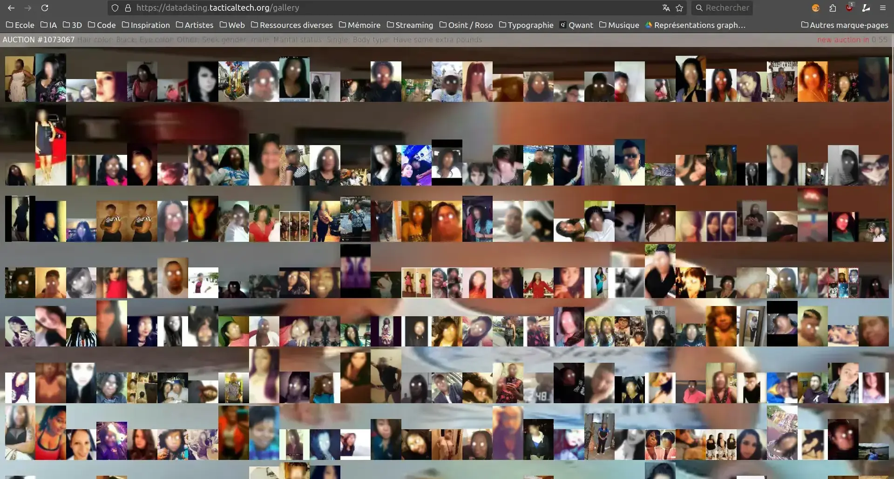
Les 300 profils en vente à un instant variable.
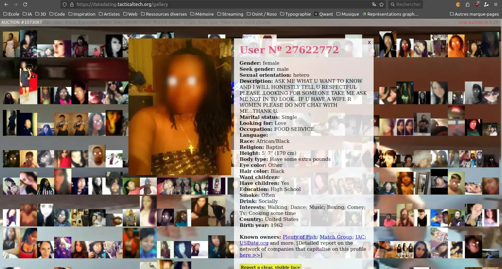
Sélection d'un profil afin de montrer les informations détenues.
L’achat de ces données a mis en évidence l’existence d’un vaste marché de revente d’informations
personnelles, souvent sans le consentement explicite des utilisateurs. Ce projet a donné naissance à un
site de mise aux enchères de lots de profils. Il dénonce les pratiques opaques des plateformes de
rencontres et leur exploitation commerciale des données personnelles.
2.3. L'identité numérique entre préservation et dépossession
Clé
Valeur
Description
Informations supplémentaires
id
612
Identifiant unique de la requête ou du processus.
Aucun lien avec un utilisateur spécifique, il s'agit d'un ID généré automatiquement pour
traquer cet événement.
URL d'où provient l'utilisateur avant d'arriver sur la page.
Fournis des informations sur les sources de trafic ou les campagnes de référencement.
Pixel Version
2.9.176
Version spécifique du pixel utilisé.
Indique les capacités ou les fonctionnalités disponibles pour ce pixel de suivi.
Screen Height
1440
Hauteur de l'écran, utile pour analyser l'expérience utilisateur.
Peut être utilisé pour identifier des différences de comportement selon les appareils
(mobile, desktop, etc.).
Screen Width
2560
Largeur de l'écran, nécessaire pour adapter le contenu.
Aide à optimiser l'affichage pour les différentes résolutions d'écran.
hmd
858d0aed70928
11e28a0bb6e
Identifiant unique du dispositif ou utilisateur (souvent anonymisé).
Garantis un suivi sans compromettre directement l'identité de l'utilisateur.
coo
false
Indique si les cookies sont activés (false signifie qu'ils ne sont pas
utilisés).
Un indicateur que seuls des cookies essentiels peuvent être utilisés pour cette session.
csest
true
Indique si la collecte des cookies essentiels est activée.
Signale que le consentement minimal pour les cookies a été donné par l'utilisateur.
tm
1
Timestamp supplémentaire pour synchroniser les événements.
Synchronise les données entre divers outils d'analyse ou suivi.
cdl
APIunavailable
Statut de l'API, indique si elle est disponible.
Montre que l'API n'est pas accessible ou ne peut pas répondre pour cette requête.
rqm
GET
Méthode de requête utilisée (GET).
Confirme l'utilisation d'une requête non intrusive pour récupérer les données.
pl
Trottinettes
Chemin relatif de la page visitée.
Sers à classer les pages selon leur structure ou hiérarchie sur le site.
fbp
fb.1.17320256 79558.
34021 0043538252559
Identifiant unique pour le suivi des événements Facebook.
Permes de lier cette session utilisateur à des campagnes publicitaires spécifiques.
ler
other
Code pour différencier l'origine des événements.
Facilite la catégorisation des sources des événements dans des rapports.
o
12318
Code déclencheur spécifique de l'événement.
Identifie les événements spécifiques déclenchés par cette requête.
Event Count
0
Nombre des événements collectés.
Aucune interaction utilisateur enregistrée pour cet événement particulier.
In an iFrame
false
Indique si l'événement a lieu dans une iframe.
Cela signifie que l'événement s'est produit directement sur la page principale.
Initialized Timestamp
1732718039836
Timestamp d'initialisation.
Aide à mesurer le délai entre l'initialisation et l'enregistrement de l'événement.
Données relatives à un cookie après l'avoir accepté et cliqué sur un produit tiers.
Avant de rentrer dans les détails de ce que signifient les informations ci-dessus, expliquons comment
nous pouvons obtenir ce résultat. Un add-on, ici du nom d'Omnibug [34],
a
été installé sur mon navigateur de
recherche, Google Chrome, et enregistre les cookies lorsque nous les avons acceptés. Il montre en détail
toutes les informations contenues dans la première et deuxième colonne, la troisième permettant
d'expliquer sommairement l'utilité de chaque fonction. L'expérience réalisée a été d'aller sur le site
Decathlon, d'accepter les cookies et de cliquer sur le premier produit proposé.
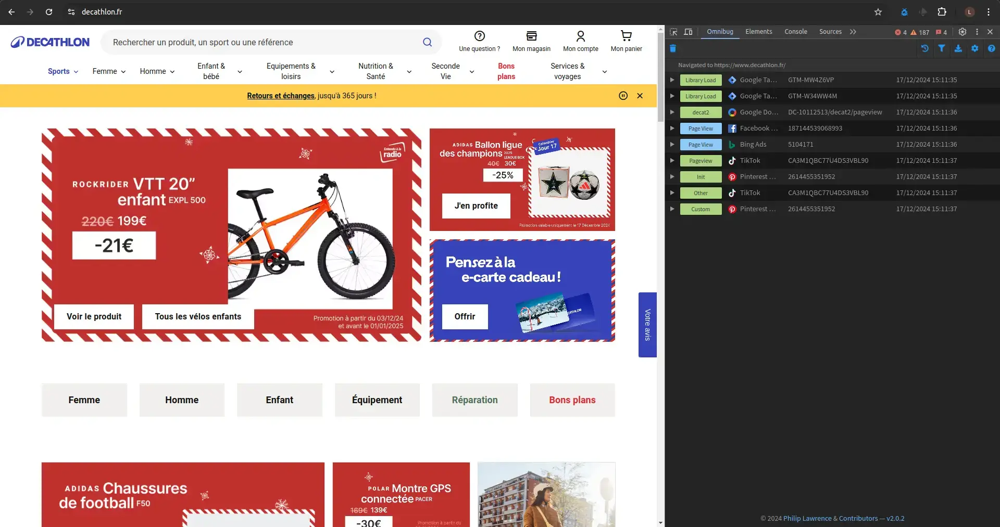
Après avoir accepté les cookies.
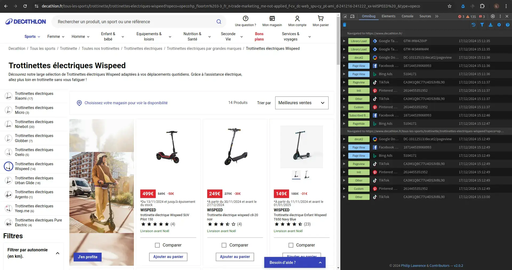
Après avoir cliqué sur un lien en page d'accueil.
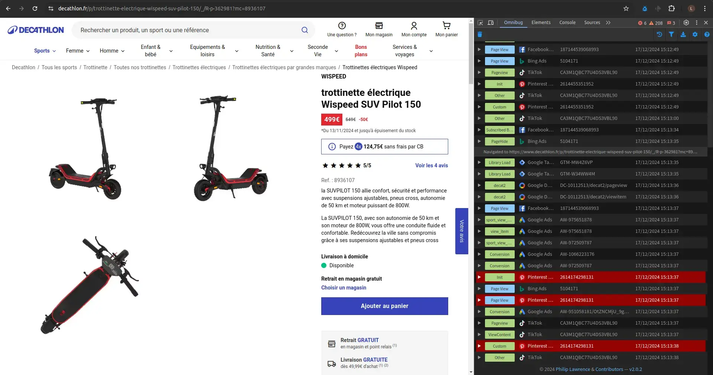
Après avoir sélectionné un produit.
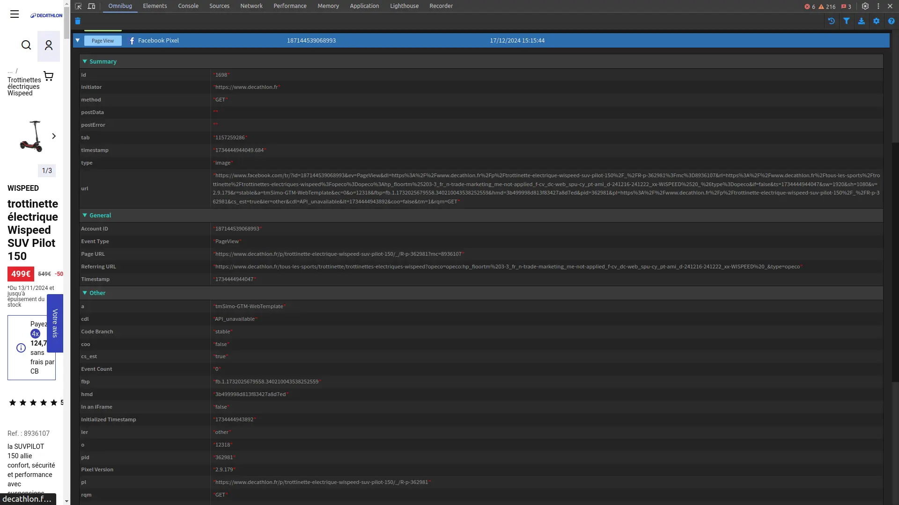
Contenu d'un cookie Facebook.
Le cookie est ici un outil de suivi marketing, qui sert à créer notre identité numérique auprès des
entreprises qui collectent et revendent ces données utiles au traçage de l'utilisateur afin de lui
proposer du contenu publicitaire ciblé. Il est produit par Facebook Pixel et permet de suivre les
activités sur le site marchand. Cela inclut les pages visitées, l’origine de la visite et les
caractéristiques techniques du dispositif de navigation.
Par ce simple exemple qui n'a représenté que 5% des cookies apparus lors de ma visite sur ce site,
nous percevons le potentiel qu'ont les industries à nous transformer en produits, revendus par la
suite. Sans humanité, nos données errent dans des espaces où l'homme ne peut mettre les pieds.
Nous sommes appauvris de nos droits privés, chaque fait et geste est épié. Si, par exemple, je continue
de défiler la page, de nouveaux cookies apparaîtront. Heureusement, des lois telles que le RGPD existent
et nous permettent de nous prémunir d'une meilleure manière que dans d'autres régions moins
soucieuses de l'identité numérique. Mais cet acquis n'est que temporaire, rien ne garantit
qu'il le restera.
Parmi les données que nous pouvons retrouver dans un cookie, il y a l'homophilie de statut définie
précédemment :
Données sociodémographiques :
Âge
Genre
Localisation (+ adresse IP nécessite un consentement clair)
Il est intéressant de remettre en question le terme "portrait", qui, à la fois, désigne la
représentation de quelqu’un par un médium, mais qui, dans ce contexte, décrit plutôt ses
caractéristiques numériques. Ce profil se détache sur l’écran.
Cette vision de la personne comme produit est un reflet direct du cadre régissant notre doppelgänger.
Une
analyse détaillée de ce cookie montre clairement qu’il y a une absence de consentement éclairé dans
cette situation, soulignant ainsi que nos données sont une véritable monnaie virtuelle. Les acteurs de
ce milieu ont réussi à transformer ces informations en produits commerciaux dans le but de nous faire
consommer plus.
Ce graphique, qui repose sur une base de données créée à partir de sondages et d’analyses internes,
montre que, en France, 59% de la population acceptait les cookies en juin 2022. Une tendance semble
indiquer une augmentation progressive du refus de ces traceurs.
Cependant, il faut considérer avec prudence ces statistiques. Parmi mes connaissances, bien informées
sur les questions numériques, plusieurs continuent d’accepter volontiers les cookies, principalement
pour gagner du temps. Ce groupe dominant, qui choisit souvent la voie de moindre résistance, constitue
un facteur majeur dans ma réflexion.
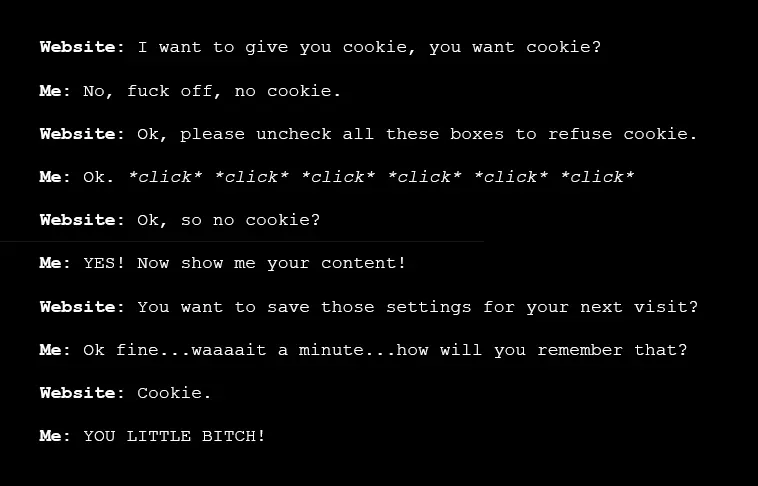
Nos identités plurielles et volontaires : la construction de soi en ligne
Destitution.
Au détour d’un forum, il osa enfin poser une question. Parmi les quelques messages reçus, un
utilisateur mystérieux lui répondit enfin.
– Les traces que tu laisses sont plus puissantes que tu ne le crois, écrivit “petithommevert”.
Ils échangèrent longuement. Puis, sans préavis, “petithommevert” lui envoya un lien accompagné de ces
mots :
– Regarde.
Ce qu’il découvrit dépassait tout ce qu’il avait imaginé. Une interface étrange affichait un double
numérique de lui-même : un doppelgänger, un modèle comportemental bâti à partir de ses données. Tout
ce qu’il faisait, tout ce qu’il était, était réduit à une série de chiffres et d’algorithmes.
L’existence de ce double le hantait. Était-il responsable de tout ce qui lui arrivait ? Pouvait-il
même distinguer ses propres actions de celles attribuées à cet alter ego ?
Il lui demanda si cet alter ego était capable de plus. La réponse fut incertaine, mais laissait
planer un doute... Peut-être n'était-ce pas lui qui avait posté les insultes.
Pris de peur, il décida de ne plus utiliser son smartphone, mais faible face à cette décision et aux
impacts sur sa vie, son quotidien devenait impensable. Il décida de le rallumer et posa une question
simple à “petithommevert” :
– Que dois-je faire ?
– Crée du bruit. Perds-les dans une cacophonie.
– … Tu ne peux pas effacer tes traces, mais tu peux les rendre inutilisables.
Louis suivit cette idée désespérée. Il brouilla ses habitudes, se créa de fausses identités, visita
des sites improbables. Peu à peu, son doppelgänger perdit de sa cohérence. Mais l’effort l’isolait,
l’épuisait.
Une nuit, il se confia une dernière fois à l’inconnu :
– Est-ce que ça vaut vraiment la peine ?
– Ça, seul toi peux le savoir, répondis “petithommevert”.
Ces mots résonnèrent longtemps dans l’esprit de Louis. Alors qu’il contemplait le vide de sa vie, il
réalisa que la bataille n’était pas seulement contre un système, mais contre sa propre soumission.
Et cette fois, il ne comptait pas céder.
3.1. Les identités subies : exploitation et marchandisation de l'individu
Comme nous l’avons déjà vu, les cookies et les pixels sont des outils utilisés à diverses fins. Ici,
nous
nous attarderons à la marchandisation de soi consentie, mais non éclairée, ou non désirée, mais
obligatoire. Les conditions générales d’utilisation, obligatoires lors de l’utilisation de cookies, de
la création d’un compte ou de l’abonnement à un service, ne garantissent pas que nos données ne seront
pas utilisées ou revendues par l’entreprise.
"Il y a toujours plus de données à capturer dans le coffre aux trésors planétaires
incommensurable d'Internet et des plateformes de médias sociaux."
Contre-atlas de l'intelligence artificielle[38], Kate
Crawford, 2021, page 112.
Bien que l'exemple que prend Kate Crawford dans son livre concerne les photos d'identité
judiciaire, elle instaure une notion de contexte qui n'est pas prise en compte par les algorithmes,
en mettant en lumière un pragmatisme capitaliste.
Considérons le service de diffusion en continu de musique Spotify. En examinant sa politique de
confidentialité[39], à compter du 10 octobre 2024, il servira
d’exemple illustrant la monétisation des informations
personnelles. Du point de vue de l'utilisateur, il est possible de souscrire ou non un abonnement
premium supprimant les publicités. En l’absence de cette précaution, "Spotify peut utiliser vos
informations personnelles pour vous présenter des publicités ciblées."
Il existe plusieurs degrés de la marchandisation :
Une collecte détaillée des données personnelles et sociodémographiques vues précédemment, ainsi que
l'activité d'écoute, les appareils utilisés, et les fournisseurs de réseaux.
Une personnalisation et un ciblage publicitaire visant les utilisateurs gratuits.
Un partage des ressources avec des tiers, "partager vos données avec des partenaires
commerciaux, tels que des fournisseurs de services de paiement ou des fournisseurs
d'analyses."
Le but de tout cela vise-t-il vraiment à améliorer les services proposés ? Ou la personnalisation n’est-elle
qu’un leurre marketing ? L’analyse de nos habitudes de consommation se révèle à la fin de l’année lors
de la découverte de notre wrapped [40], un résumé annuel détaillé qui
révèle des informations telles
que notre temps d’écoute, nos artistes et morceaux préférés, ainsi que nos genres musicaux favoris. Ici,
la personnalisation est un outil à double tranchant : d'un côté, une écoute et une navigation plus
optimisées pour l'utilisateur, de l'autre, elle permet d'industrialiser la musique à
l'aide des labels et des listes d'écoute pour mettre en avant un contenu spécifique.
En élargissant notre perspective, il est indéniable que les GAFAM (Google, Apple, Facebook, Amazon et Microsoft) sont les entreprises les plus
prospères
grâce aux revenus publicitaires. La masse de personnes utilisant quotidiennement le moteur de recherche
Google et Facebook pour les réseaux sociaux est colossale. De plus, en croisant ces informations avec
celles données précédemment, le suivi actif leur permet de générer des revenus considérables. Pour
Google Search & Others, qui représente 56,93% du revenu total en 2023, il s'agit de 175,04 milliards de
dollars[41].
Un autre exemple de cookies non désirés mais obligatoires se trouve sur les pages web telles que Marmiton[42]. Conformément à
la
loi RGPD, dès l'arrivée sur le
site, il nous est proposé d'accepter ou de refuser les cookies. Cependant, dès que l'on clique
sur le refus des cookies, il nous est proposé :
S'abonner pour un mois.
Changer d'avis et accepter tous les cookies.
Page d'accueil.Après avoir cliqué sur "Je n'accepte rien".
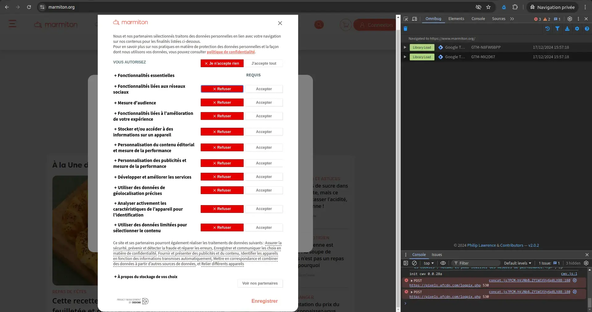
Sélection des autorisations.
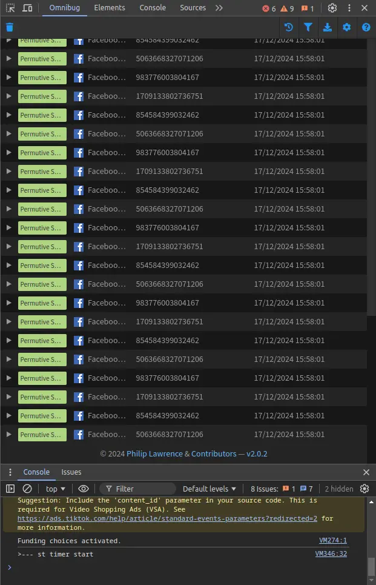
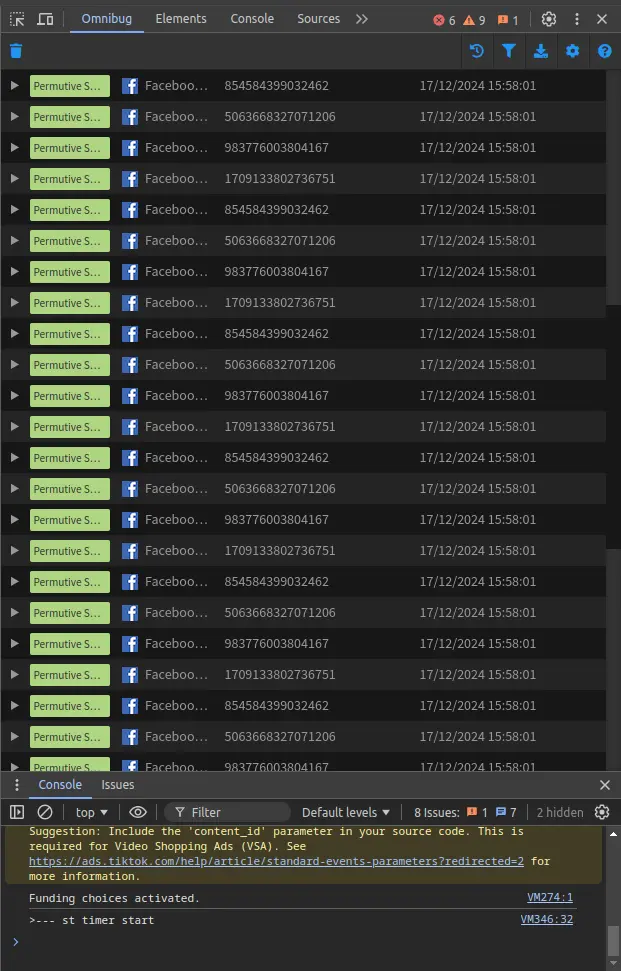
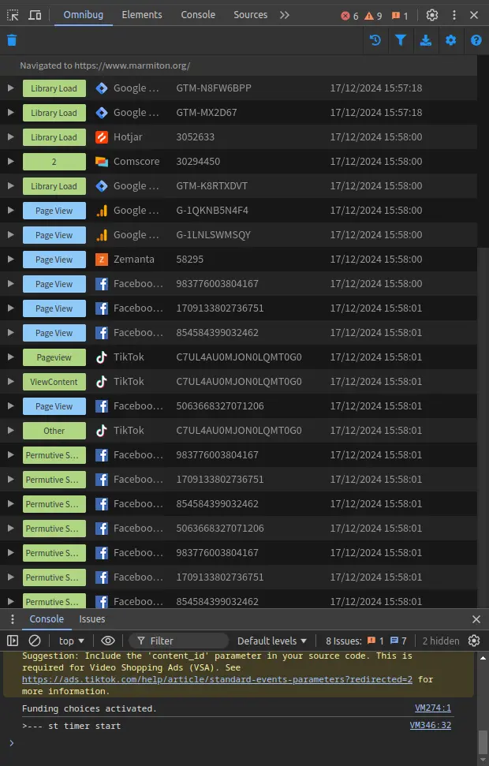
Après avoir été forcé d'accepter si nous ne voulons pas payer.
Ce système est à la fois compréhensible, car le site héberge des recettes culinaires partagées par les
utilisateurs sans contenu payant. Pourtant, il met en lumière le prix que vaut l'acceptation des
cookies : 0,49 euro par mois.
Ce contexte est compliqué, car il pointe de façon précise la manière qu'ont certains sites pour se
rémunérer. Le tarif nous laisse supposer que les revenus faits avec un utilisateur occasionnel sont
minimes, mais l'échelle est importante. Ce sont donc certainement des dizaines de milliers de personnes
qui concèdent chaque mois des informations.
L’article "Votre consentement vaut 75 euros par an"[43]
explore la rémunération des sites Web grâce à l’analyse des paywalls. Les chercheurs ont examiné la
présence et la légalité de ces pratiques sur 1000 sites Web autrichiens et 150 autres dans l’Union
européenne.
Les résultats montrent que 2,72 % des sites utilisent des paywalls traditionnels, tandis que 0,13 %
d’entre eux ont recours à des cookies paywalls. La différence entre les deux repose sur le modèle
d’accès : le premier exige un paiement pour consulter le contenu, tandis que le second propose un choix
entre accepter les cookies ou refuser et devoir payer.
"L'ONG autrichienne NOYB a déposé des plaintes contre les paywalls de sept grands sites
d'information allemands et autrichiens en 2021, estimant que le consentement n'est pas donné
librement si l'alternative au suivi est de "payer 100 fois le prix du marché des données
personnelles de l'utilisateur.""
Your Consent Is Worth 75 Euros A Year – Measurement
and Lawfulness of Cookie Paywalls[44], 2022, page 2.
L’étude conclut qu’un refus de tracking peut entraîner des frais variant entre 36 et 75 euros par année,
selon la manière dont nous utilisons Internet. Ce chiffre révèle l’intérêt capitaliste des sites web à
nous faire accepter les cookies, quel que soit le moyen employé. Même si celle-ci est discutable.
3.2. L'identité numérique militante : la lutte pour l'intégrité et la protection de soi
Le cadre juridique peut être analysé sous trois angles principaux : étatique, continental et local.
Chaque région à travers le monde a traité à sa manière les recours pour l’intégrité et la protection des
données. Cette liste, bien que non exhaustive, illustre les disparités auxquelles font face les
habitants selon leur localisation :
Europe : RGPD
États-Unis : CCPA (Californie), lois d’États (ex. Colorado, Virginie)
Canada : PIPEDA
Amérique latine : LGPD (Brésil), Loi fédérale (Mexique)
Chine : PIPL
Japon : APPI
Inde : Digital Personal Data Protection Act (projet)
Afrique du Sud : POPIA
Australie : Privacy Act 1988
Nouvelle-Zélande : Privacy Act 2020
L’Europe est régie par le RGPD, entré en
vigueur en 2018. Ce règlement consacre le principe de protection des données comme un droit fondamental
et introduit des obligations strictes pour les entreprises. Considéré comme une référence mondiale, il
influence d’autres pays, tel que le Brésil. Bien que les pays de l’UE soient confrontés à une
uniformisation croissante, ce phénomène n’est pas universel.
Aux États-Unis, chaque État dicte ses propres règles. L’absence de législation fédérale entraîne un
paysage législatif fragmenté, avec de grandes disparités qui minent l’Américain moyen. De plus, avec
l’exemple de la CCPA (California Consumer Privacy Act), il est connu que l’encadrement en
matière de consentement préalable est amoindri comparé à l’Europe.
Ces lois présentent de nombreuses divergences dues à leur contexte politique, économique et culturel.
Leur seul point commun est de proposer un cadre juridique autour de la protection des données.
Heureusement, en France,
d’autres institutions, d'État ou associatives, mettent en lumière les dysfonctionnements et les
mauvaises applications des lois.
La CNIL, créée en 1978 pour donner suite au projet SAFARI [45], a vu le
jour en réponse à une contestation globale des citoyens et des
politiques. Elle fit partie des premières entités autonomes à s’opposer à la surveillance généralisée
des données personnelles.
Bien qu’elle ait contribué à établir un environnement numérique sécuritaire, son influence est
maintenant
réduite. Ses prises de position sont parfois jugées insuffisantes [46].
D’autres acteurs ont maintenant une place centrale dans la défense des droits numériques. (La CNIL
démissionnaire[47])
Félix Tréguer, membre de l’association La Quadrature du Net, met en évidence le rôle crucial des
organisations dans la défense des libertés numériques. Fondée en 2008, cette association indépendante
n’a pas obtenu le statut d’utilité publique malgré ses actions remarquables. Elle a su s’adapter à un
paysage en constante évolution, marqué par des progrès technologiques et une sécurité accrue.
"La Quadrature du Net a été créée en 2008 et l’un de ses premiers combats fut contre la loi
HADOPI. Depuis, le paysage dans lequel elle évolue s’est largement transformé. Il est marqué
notamment par une accélération du durcissement sécuritaire et un resserrement de l’espace
démocratique, mais aussi par la fuite en avant de l’informatique centralisée et
technocratique."
Leur site offre aussi une section consacrée aux données personnelles[51], qui répertorie diverses
mesures et articles à ce propos.
En parallèle des grandes institutions, comme la CNIL ou des associations nationales, telle que La
Quadrature du Net, des acteurs locaux émergent pour éduquer et agir au plus près des citoyens.
À Saint-Étienne, par exemple, l’association Halte au
contrôle numérique[52] a vu le jour en 2019. Ce collectif s’est
formé
en opposition au projet de loi
Serenity, qui visait à déployer un système de surveillance dans certains quartiers de la ville.
Ce type d'initiative démontre que la résistance citoyenne face à des technologies souvent imposées
peut naître à tous les niveaux, du national au local.
3.3. Interview
Marie Moulin (son identité est modifiée pour cause de confidentialité) a travaillé dans trois
entreprises différentes. Dans la première, elle s’occupait principalement de campagnes publicitaires
en ligne. Son rôle consistait à créer des personas : des profils types de clients pour un produit
donné. Par exemple, dans le cas d’une raquette de tennis vendue par Decathlon, elle imaginait un
homme d’environ 25 ans, sportif occasionnel, pour orienter les publicités vers ce type de profil.
Dans sa deuxième expérience, elle a continué dans le domaine du marketing, mais cette fois avec un
focus sur les jeux concourt. Ces campagnes utilisaient des données dites first-party :
celles que les utilisateurs partagent volontairement via des formulaires. C’est dans ce contexte
qu’elle a pu observer des dysfonctionnements liés à l’application des lois sur la protection des
données. Par exemple, certaines entreprises sélectionnaient uniquement les participants ayant
accepté de partager leurs données (case opt-in), écartant systématiquement ceux qui avaient
refusé. Elle a aussi remarqué des pratiques interdites, comme des cases opt-in précochées
ou des bannières de cookies frauduleuses : que nous les acceptons ou que nous les refusons, les
cookies s’installaient quand même sur l’appareil de l’utilisateur. Dans certains cas, ces problèmes
étaient connus, mais délibérément ignorés.
Actuellement, elle travaille comme support technique dans une équipe marketing. Elle s’occupe
principalement de mettre en place le tracking des utilisateurs à l’aide de cookies. Son entreprise
collabore avec des marques importantes, souvent cotées en bourse. Le respect des lois dans ce
domaine est crucial, surtout lorsque l'entreprise a une grande visibilité, d’autant plus que la
législation évolue sans cesse.
Les techniques et outils de ciblage
publicitaire
Le ciblage publicitaire repose largement sur la création de personas. Il s’agit de comprendre
précisément l’audience ciblée en analysant les données disponibles. Une fois le persona défini, il
est possible, par exemple, de transmettre ce profil à Facebook, qui se charge d’identifier un public
correspondant et de diffuser des publicités adaptées. Cette méthode va parfois plus loin, avec le
croisement de bases de données. Des informations sur des clients existants sont transmises à
Facebook pour trouver des audiences similaires et élargir la portée des campagnes.
Le tracking joue un rôle clé dans ce processus. En utilisant des cookies ou des pixels, elle collecte
des données issues de différentes sources, ce qui permet d’affiner les campagnes publicitaires et de
mieux comprendre les comportements des utilisateurs.
Dans son quotidien, elle s’appuie sur plusieurs outils pour gérer ce tracking et analyser les
performances des campagnes. Parmi les outils qu’elle utilise, nous trouvons Google Tag Manager,
Pixel Meta (anciennement Facebook) ou encore Omnibug. Pour centraliser et analyser les résultats,
son entreprise utilise un outil interne, Datorama SizeForce.
L’évolution des pratiques publicitaires
L’arrivée de l’intelligence artificielle (IA) a transformé les stratégies de personnalisation dans la
publicité. Elle a évoqué une méthode qui consiste à créer une combinaison de titres, descriptions,
images et appels à l’action (CTA). En soumettant ces éléments à l’IA, celle-ci génère
automatiquement des publicités personnalisées en fonction des profils des utilisateurs. Chez Meta,
ces cibles sont appelées des « audiences », tandis qu’Amazon parle de « segments ».
Malgré ces avancées, gérer les données issues des campagnes reste complexe. Chaque plateforme dispose
de son propre système (API), ce qui rend difficile la centralisation des informations. Elle explique
qu’un travail de "mapping" est souvent nécessaire pour unifier les données collectées. Cela
permet d’extraire une vue d’ensemble, même si les métriques ne sont pas toujours directement
comparables.
Elle insiste aussi sur le fait que chaque plateforme attire un public différent. Par conséquent, il
faut adapter les stratégies de ciblage pour toucher efficacement les audiences de chaque réseau
social.
Les données exploitées pour le ciblage
publicitaire
Les campagnes publicitaires utilisent plusieurs types de données pour affiner leur ciblage :
Données sociodémographiques : âge, genre, localisation (avec consentement explicite pour
l’adresse IP) et langue.
Données comportementales : historique de navigation, catégories ou contenus consultés,
interactions avec des publicités et fréquence des visites.
Données contextuelles : contenu de la page visitée, heure de la journée, type d’appareil utilisé
et système d’exploitation ou navigateur.
Réflexions sur le futur de l’industrie
publicitaire
Elle s’interroge sur l’avenir des cookies, notamment avec le concept de « Google Cookies Less Future
», qui vise à se passer des cookies tiers. Elle accorde que ce secteur fait face à une
déshumanisation grandissante : les utilisateurs sont réduits à des chiffres et des données, perdant
leur individualité derrière un écran. Ce projet a été annulé entre l'interview et
l'écriture.
Enfin, elle remarque que les attitudes face aux réglementations diffèrent selon les profils :
certains techniciens cherchent à se protéger en appliquant scrupuleusement les règles, tandis que
d’autres les ignorent complètement. Pour sa part, elle utilise les algorithmes pour optimiser ses
recherches personnelles, comme lorsqu’elle a cherché un cadeau adapté pour son père en voyant
proposer des marques jusqu'alors inconnues qui lui sont proposées sous la forme de publicités.
Nous avons précédemment examiné un graphique de la CNIL montrant le nombre de personnes qui acceptent
ou refusent les cookies. Une étude met en lumière l'ampleur du temps que les Européens passent
chaque année à interagir avec ces bannières. Il est estimé que cela représente 575 000 000 d'heures
par an[53] passées à accepter ou refuser des cookies. Cela
représente 1 heure et 42 minutes par
personne chaque année, un temps considérable quand nous l’additionnons au niveau européen. Ce
chiffre met en évidence l’absurdité de cette situation, où une pseudo-liberté d’acceptation ou de
refus des cookies nous fait perdre un temps précieux.
C’est ce que, à titre personnel, je dirais si nous étions dans une logique productiviste. Or ce n'est
pas le cas. De plus, ce document entre en résonance avec l'écrit sur le prix de notre liberté. Les deux,
ensemble, définissent une vision d'un anonymat des mieux préservé, pour un cout total d'une heure et
quarante-deux minutes ainsi que 36 à 75 euros par an et par personne.
Le problème n'est pas seulement le fait que ces bannières sont omniprésentes, mais aussi dans la
complexité des choix proposés. Souvent, l'utilisateur doit naviguer à travers des menus
d'options pour personnaliser ses préférences de cookies, ce qui peut être fastidieux et source
de confusion. Et pour ceux qui souhaitent simplement naviguer sans être suivis, il existe rarement
une option simple pour refuser tout suivi sans risquer de se voir exclure de l'accès au contenu
du site.
Face à cette perte de temps et à cette contrainte, des initiatives comme Je m'en fous des cookies[54] ont vu le jour.
Cette extension permet de supprimer automatiquement les pop-ups de consentement aux cookies, ce qui
permet aux utilisateurs de naviguer plus rapidement et librement sur le web sans être interrompus
par ces demandes répétitives.
Ces outils vont au-delà de l’économie de temps et soulèvent des questions sur la validité des
pratiques actuelles et l’équilibre entre consentement et manipulation. Que signifie vraiment
"donner son consentement librement" si cette action devient une simple formalité sans
réelle option de contrôle pour l'utilisateur ?
Conclusion
Cet écrit contribue à une réflexion sur la redéfinition de l’identité numérique et de la protection de
soi. Il souligne les mesures mises en place pour assurer la sécurité des données et leur exploitation
facile. En effet, nos informations personnelles circulent constamment, captées, analysées et vendues
dans des formats dont nous n’avons pas nécessairement le contrôle. Les cookies sont devenus les
sentinelles silencieuses de notre navigation. Ils enregistrent nos habitudes et nos préférences.
Derrière l’apparente innocuité de ces petits fichiers se cache une surveillance omniprésente. Celle-ci
est normalisée sous le couvert de la personnalisation et du confort d’utilisation. Il est important de
comprendre le potentiel du Web. Il a la capacité d'offrir, mais aussi de nous marquer par nos choix
et nos actions.
Chaque action en ligne a des conséquences, souvent sous-estimées et insignifiantes. Cependant, si les
événements venaient à changer, elles pourraient s’avérer plus lourdes que nous ne l’imaginons.
Avec l’essor du Web 2.0, nos identités plurielles et volontaires se sont multipliées. Autrefois vitrines
d’expressions, les réseaux sociaux sont maintenant des reflets trompeurs où nous projetons une image
sculptée par les attentes des autres. Les transformations entrainées par les réseaux sociaux ont modifié
notre manière d’agir, de consommer et de nous montrer. Poussés par la dynamique sociétale, nous
partageons nos vies avec une insouciance teintée de naïveté, oubliant que ce que nous publions
aujourd’hui restera enregistré quelque part. Internet n'oublie jamais.
Les règles juridiques qui régissent les identités sociales se distinguent par une véracité accrue des
données échangées, ainsi que par l’objectif de réglementer ces activités. Les États et les entreprises
s’entremêlent pour structurer ces identités, plus proches du vrai soi. En raison de la nature des
données reçues et transmises, notre comportement évolue. De même, notre compréhension des événements se
déroulant à l’abri des regards s’enrichit. Le dicton "Nous sommes ce que nous consommons" prend ici
tout son sens : nos préférences, nos habitudes et nos faiblesses deviennent des données exploitables,
façonnant un double numérique dont l’existence nous échappe. Le tracking et l’utilisation de nos données
constituent une intrusion, mais, en France, la loi nous protège, avec parcimonie, contre plusieurs
dérives. Celles-ci se font dans un équilibre précaire. Ces institutions, bien qu’opaques, poursuivent un
but qui est difficile à comprendre, ou que je me refuse d’admettre.
Les identités militantes, finalement, nous permettent de défendre nos droits. Celles-ci demeurent
fragiles, puisqu’elles sont toujours menacées. Associations, lanceurs d’alerte et citoyens engagés
s’efforcent d’éclairer les zones d’ombre et de rééquilibrer le rapport de force. Cependant, leur combat
se déroule dans un contexte d’inégalité face à des systèmes conçus avec des zones d’ombre et visant à
maintenir l’équilibre des forces.
Par conséquent, l’expression de soi en ligne représente une responsabilité supplémentaire que nous
devons surveiller, protéger et nourrir avec parcimonie. Il nous incombe de surveiller et de prendre soin
de son entourage. Il est crucial d’être vigilant collectivement et individuellement face aux dérives,
aux lois et aux dangers. Ainsi que de diffuser une parole, qui, à mon sens, se rapproche plus de la
vérité.
Enfin, revenons à notre courte nouvelle. Louis n’est pas aussi fictif que nous pourrions le croire. Il
est une partie de chacun de nous. Il s'incarne dès notre création numérique et nous suit,
maintenant, après la mort. Ce personnage incarne l’ensemble des étapes que nous avons traversées ou que
nous allons traverser. À ce jour, la meilleure façon de se protéger est de créer du bruit autour de son
identité et d’éviter de laisser des traces.
Je m'appelle Louis Petit, et voici mon vrai visage.
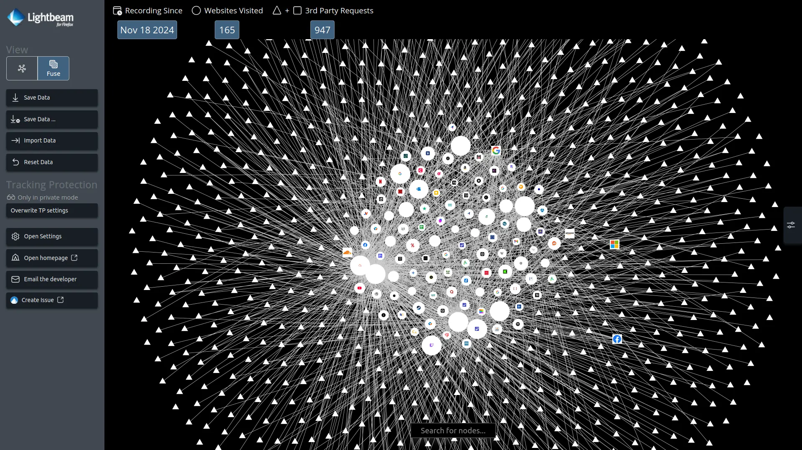
Louis Petit sur Internet.
Après avoir navigué sur Internet et accepté les cookies, voici comment cette identité est représentée.
Les cercles correspondent aux sites visités, tandis que les triangles symbolisent les cookies troisième
partie ; autrement appelée cookies tiers. Nous remarquons des liens entre certains cookies et certains
sites, ce qui illustre parfaitement ce qu’est la toile, c’est-à-dire le web en français.
15 - "The number of children in the youngest age category (9–11) who go online from their
smartphones every day ranges between 14% in France and 56% in Lithuania. In most countries,
however, less than one in three children in this age group accesses the Internet from a
smartphone several times a day."
EU kids online 2020, 2020, page 21.
23 - “Dear Internet, I am writing this to announced that I am going to commit “Friendster
Suicide” on
Thursday, --->; aka. delete my Friendster account. Yep, I just can’t take it anymore …”
Cory Arcangel, 2005.
43 -"The Austrian NGO NOYB filed complaints against paywalls of seven major German and Austrian
news websites in 2021 considering that consent is not freely given if the alternative to being
tracked is to "pay 100 times the market price of the user’s personal data."
Your Consent Is Worth 75 Euros A Year – Measurement and
Lawfulness of Cookie Paywalls, 2022, page 2.